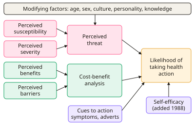

A-level Psychology Year 13 · Topic 7
Health psychology
Health psychology studies why people behave in healthy or unhealthy ways, and how we can help them change.
We will look at models of health beliefs and behaviour change, health promotion and fear appeals, and adherence to medical advice.
Then we cover doctor patient communication, the nature and management of pain, and unhealthy behaviours like smoking, drinking and overeating.
- 7 subtopics
- 305 questions
- Free: 7.1 notes and 10 questions
In this topic
- 7.1Health beliefs: Health Belief Model and locus of controlFree below · 69 questions
- 7.2Theory of planned behaviour and protection motivation theory in health behaviour changeOpen in Full Marks · 36 questions
- 7.3Health promotion: media campaigns, fear arousal and public health interventionsOpen in Full Marks · 31 questions
- 7.4Adherence to medical advice: measuring and improving adherenceOpen in Full Marks · 31 questions
- 7.5Doctor-patient communication and Ley's cognitive modelOpen in Full Marks · 69 questions
- 7.6Pain: nature, measurement, gate control theory and pain managementOpen in Full Marks · 41 questions
- 7.7Unhealthy behaviours: smoking, alcohol, obesity and interventionsOpen in Full Marks · 28 questions
7.1 · Free notes
Health beliefs: Health Belief Model and locus of control

Key points
- The Health Belief Model (HBM) (Rosenstock, 1966; Becker, 1974) explains health behaviour in terms of a person's beliefs about a health threat and about the value of taking action. It is a social cognition model.
- Perceived susceptibility is the belief about how likely you are to get a condition. Perceived severity is the belief about how serious the consequences would be. Together they form perceived threat.
- Perceived benefits are beliefs that an action will reduce the threat. Perceived barriers are the costs of acting, such as pain, money, time, embarrassment or distance. People weigh these in a cost-benefit analysis, and action is likely when benefits outweigh barriers.
- Cues to action trigger behaviour. They can be internal (symptoms) or external (a media campaign, a reminder letter, a friend's illness, GP advice).
- Self-efficacy, the belief that you can successfully perform the behaviour, was added later (Rosenstock, Strecher and Becker, 1988). It improved the model's predictive power for behaviours such as quitting smoking.
- Modifying factors such as age, sex, culture, personality, education and prior knowledge affect health beliefs indirectly rather than directly causing behaviour.
- Support: Janz and Becker (1984) reviewed 46 studies and found perceived barriers the strongest predictor of health behaviour and perceived severity the weakest. Evaluation: the HBM is mostly correlational and uses self-report, so it cannot show cause and effect.
- Limitations of the HBM: it is descriptive rather than explanatory, it does not specify how components combine, it ignores emotions, habit and social norms, and it assumes people are rational decision-makers (cultural bias).
- Locus of control (LOC) (Rotter, 1966) is a belief about what controls events in your life. An internal LOC means you believe your own actions control outcomes. An external LOC means you believe fate, luck or other people do.
- Wallston's Multidimensional Health Locus of Control (MHLC) scale (1978) uses Likert-type items to measure three dimensions: internal, powerful others (for example doctors) and chance.
- Evaluation of LOC: an internal LOC is modestly associated with health-promoting behaviour, but the link is weak and context-dependent. Self-report scales risk social desirability bias, and LOC is not the same as self-efficacy. Application: tailor health messages, for example self-management for internals and professional advice for externals.
In more detail
- Worked HBM example: a student deciding on a flu jab: susceptibility ('I live in halls, I'll catch it'), severity ('flu would ruin my exams'), benefits ('the jab works'), barriers ('needles, time'), cue ('a text from the GP'), self-efficacy ('I can book it online').
- Becker et al. (1978): the HBM predicted mothers' adherence to their children's asthma medication; mothers who saw asthma as serious and the drug as helpful were more adherent.
- Three types of control belief: internal ('my actions decide my health'), powerful others ('my doctor controls my health') and chance ('luck decides my health').
- Exam tip: in application questions, label each detail of the scenario with an HBM component, then say which one is most likely stopping the behaviour.
Practice
Health beliefs: Health Belief Model and locus of control: 10 questions
Pick an answer to check it, or open the answer for the explanation.
1. A GP practice sends a reminder letter inviting a patient for a flu jab. Which Health Belief Model component does the letter represent?
- Perceived susceptibility
- Cues to action
- Self-efficacy
- Perceived barriers
Show answer
B: Cues to action. A reminder letter is an external trigger that prompts action, which the HBM calls a cue to action. Cues can be internal, such as symptoms, or external, such as letters and adverts.
2. In the Health Belief Model, which two beliefs combine to form perceived threat?
- Internal and external locus of control
- Perceived susceptibility and perceived severity
- Perceived benefits and perceived barriers
- Cues to action and self-efficacy
Show answer
B: Perceived susceptibility and perceived severity. Perceived threat is the belief about how likely you are to get a condition (susceptibility) combined with how serious it would be (severity).
3. Sam says: 'I'm young and fit, so I'm unlikely to get skin cancer, though it would be serious.' Which HBM component is low?
- Cues to action
- Perceived benefits
- Perceived susceptibility
- Perceived severity
Show answer
C: Perceived susceptibility. Sam believes the personal risk is small, which is low perceived susceptibility. Sam does accept that skin cancer is serious, so severity is not the low component.
4. Maya skips cervical screening because she finds it embarrassing and the clinic is far away. Which HBM component best explains this?
- Self-efficacy
- Perceived severity
- Perceived barriers
- Internal locus of control
Show answer
C: Perceived barriers. Embarrassment and distance are costs of acting. The HBM calls these perceived barriers, and they outweigh the benefits for Maya.
5. Which component was added to the Health Belief Model after its original formulation, by Rosenstock, Strecher and Becker (1988)?
- Perceived severity
- Self-efficacy
- Cues to action
- Perceived benefits
Show answer
B: Self-efficacy. Self-efficacy, the belief that one can successfully perform the behaviour, was added in 1988 to help explain behaviours that are hard to change, such as quitting smoking.
6. Which is a valid criticism of the Health Belief Model?
- It ignores people's beliefs about health
- It ignores emotions such as fear, and habitual behaviour
- It includes too few cognitive variables to test
- It only applies to mental illness
Show answer
B: It ignores emotions such as fear, and habitual behaviour. The HBM assumes rational, belief-based decisions and neglects emotions, habits and social influences. It is a valid criticism that the model is descriptive and omits these factors.
7. According to Rotter (1966), a person with an internal locus of control believes that:
- They have no responsibility for their health
- Their own behaviour largely controls what happens to them
- Powerful others control their outcomes
- Events are mainly determined by fate or luck
Show answer
B: Their own behaviour largely controls what happens to them. An internal LOC is the belief that outcomes depend on one's own actions. Belief in fate, luck or powerful others is an external LOC.
8. Wallston's Multidimensional Health Locus of Control scale measures which three dimensions?
- Attitude, subjective norm, control
- Susceptibility, severity, barriers
- Internal, powerful others, chance
- Internal, external, stable
Show answer
C: Internal, powerful others, chance. The MHLC divides external control into powerful others (such as doctors) and chance, and adds an internal dimension, giving three scales.
9. Tom agrees with the statement 'Whether I get ill is mostly a matter of luck.' Which MHLC dimension is Tom scoring highly on?
- Self-efficacy
- Powerful others
- Chance
- Internal
Show answer
C: Chance. Believing health depends on luck or fate is the chance dimension of the MHLC. Powerful others would be belief that doctors or others control health.
10. A study finds a correlation of r = +0.18 between internal health LOC score and daily portions of fruit and vegetables. Which conclusion is justified?
- There is a strong negative relationship
- There is no relationship at all
- There is a weak positive correlation; causation cannot be inferred
- Internal LOC causes a large increase in fruit intake
Show answer
C: There is a weak positive correlation; causation cannot be inferred. r = +0.18 is a weak positive correlation. Correlation does not show that internal LOC causes healthier eating, as a third variable could explain it.
Keep going in Full Marks
Full Marks has 69 questions on Health beliefs: Health Belief Model and locus of control (59 more than here), set out in practice levels. You also get notes and 3D models for all 7 subtopics of Health psychology, plus games, timed exams and past papers.
On your exam board
- EdexcelTopic 6C: Option: Health psychology
- CambridgeTopic 9: Health psychology
Not in the AQA and OCR specifications.